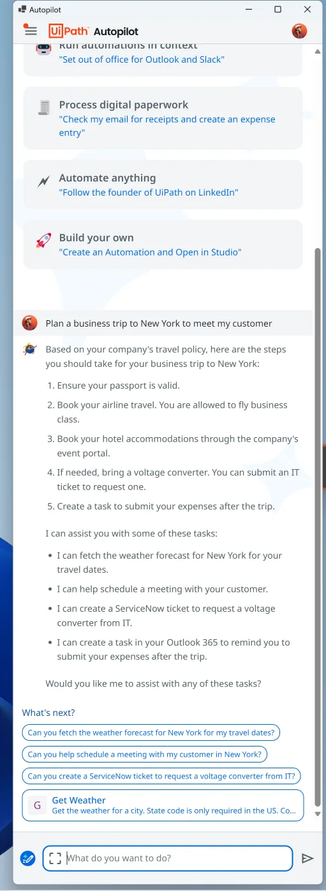
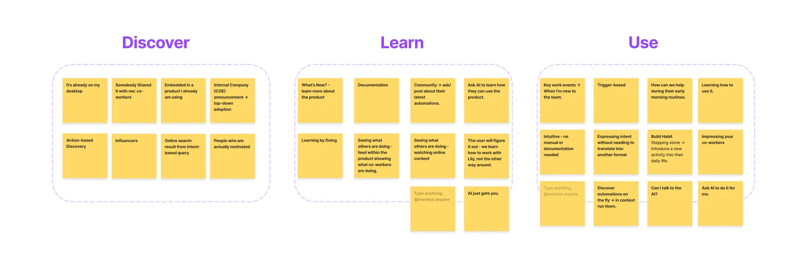
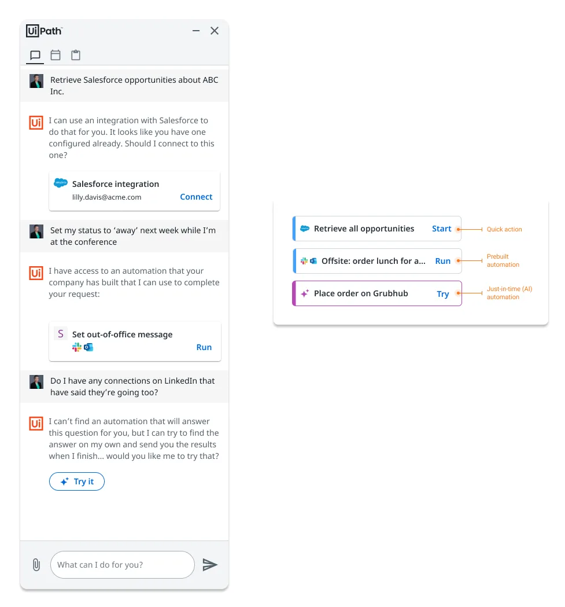
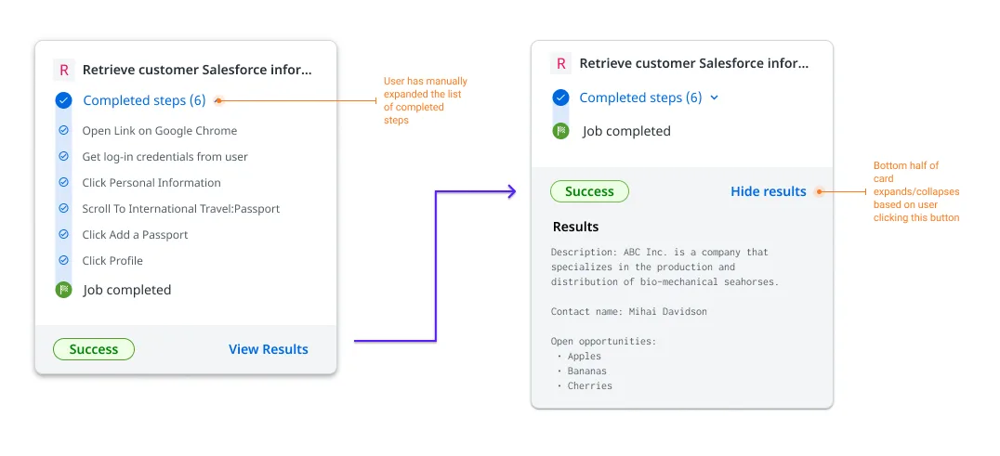
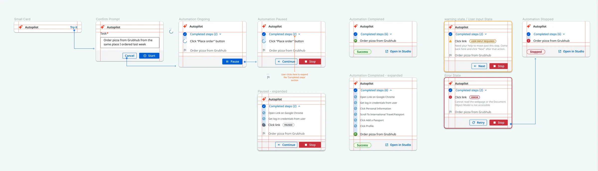

Case study · UiPath · 2023
Designing for uncertainty: an AI assistant for enterprise automation
- Role
- Primary designer, concept to prototype
- Team
- Product, engineering, a second designer, content strategy
- Outcome
- CEO and CTO backing, live demo at UiPath Forward
Summary
At UiPath, I designed a chat-based AI assistant that lets people who aren't technical run automations and get help with routine work in plain language. The hard problem wasn't the chat. It was trust: AI responses vary in reliability, and some automations were experimental. I designed ways for the assistant to show how sure it was, what it was doing, and which features were still experiments. The concept went from my first wireframes to a review with the CEO and CTO and a live demo at the UiPath Forward conference in October 2023.

My role
I was the primary designer from the first concept through the high-fidelity prototype that won stakeholder buy-in. As the project grew, I worked with a second designer, ran a competitive analysis, and helped run a week-long design sprint with product managers, engineers and product owners. The team tested the assistant informally by dogfooding it; formal user testing wasn't in scope at this stage of the product. I also worked with UiPath's content strategists on the assistant's content decisions.

Key decisions
1. Show confidence, not just answers.
Responses carried a high, medium or low confidence indicator. Each level came from a model score combined with more rules-based logic used in UiPath's traditional unattended automation software.
Tradeoff: admitting uncertainty can make a product look less capable. But client conversations, user testing and the research behind our user personas all showed that people cared more about reliability and clear expectations than about how the technology worked, so honest signals built more trust than a confident tone.

2. Let people choose how much of the work to see.
While the assistant ran an AI-driven automation, people could show or hide its intermediate steps. Hiding the steps by default and showing them on demand gave both clarity and transparency.
Tradeoff: full transparency clutters the chat, but hiding everything makes the agent a black box.

3. Label experiments honestly.
The assistant offered three kinds of actions: quick actions, pre-built automations, and just-in-time automations generated by AI. I gave each a distinct look within one visual system, and labeled the experimental AI actions "Try" instead of "Run."
Tradeoff: the label signals these might not work, which could lower usage. In return, it sets expectations so one failure doesn't damage trust in the whole assistant.
What shipped
A high-fidelity interactive prototype, demonstrated live at UiPath Forward in October 2023. Soon after I left, the assistant went into production as UiPath Autopilot, a sidecar chatbot within the UiPath automation platform.

Evidence
- The CEO and CTO reviewed the concept and backed it. The work led UiPath's company-wide pivot toward agentic automation.
- The design sprint pulled ideas from product, engineering and design into one direction that everyone felt some ownership of. It set the core flow and picked the most valuable use cases to design first.
- The live demo at UiPath Forward drew strong positive feedback from clients in attendance at the conference.
- The project put my earlier principles for agents that work alongside people into practice. I also shared them with client automation developers building internal apps for their companies, such as call center and new-employee onboarding apps.
What I'd change
I'd spend more time on the transitions between states and steps. The automations jumped abruptly from one step to the next, yet the point of the demo was to watch the agent work. Designed transitions would have made it more appealing and given it a more human touch, and that builds trust.